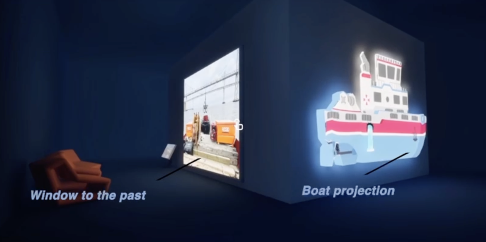
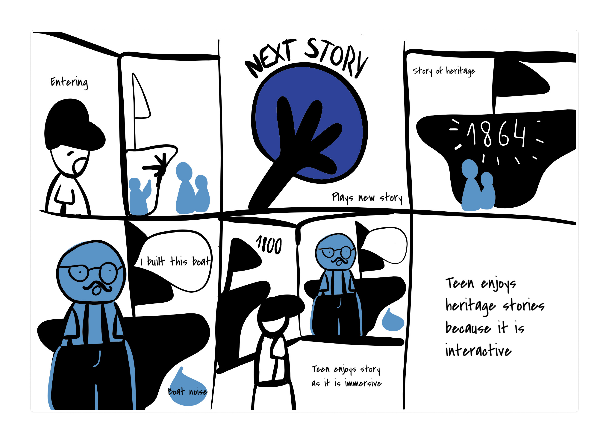

Role
UX Designer, Researcher, Writer
Case study
Designing a concept to preserve and share experiential knowledge across generations.

Role
UX Designer, Researcher, Writer
Context
School project for the Dutch Foundation of Mobile Heritage
Timeline
February – June 2024
The challenge
This project focused on the experiential knowledge held by mobile heritage amateurs, club members, and volunteers. The challenge was to make that knowledge more visible and accessible, and to do so in a way that felt welcoming, useful, and realistic for the community itself.

Understanding the community
Our research focused on both the environment around Loods M and the people connected to the mobile heritage community. Through interviews, observations, and desk research, we looked at how knowledge was shared, what motivated members to participate, and what could make an experience feel accessible to a wider audience.
Key insights
Much of the value lived in people’s stories, experiences, and hands-on expertise, not in formal documentation.
The concept could not demand extra work from community members or turn their contribution into a burden.
The experience had to be engaging and easy to approach, even for people without technical background knowledge.
What we focused on
Based on the research, the concept needed to do more than display information. It had to support knowledge transfer between generations, create meaningful connections between people, and make the space feel like a welcoming community hub rather than a static exhibition.
Concept direction
Since the client wanted to transform an empty building into a community space, the concept was developed as a physical exhibition environment. The goal was to create a place where visitors could explore mobile heritage in a way that was fun and interactive, while still honoring the people behind the knowledge.

Ideation
Our group explored several different concepts and tested how they might work inside Loods M. Over time, we found that the strongest direction was not a single idea, but a combination of several concepts. Together with the client, we refined those into one final experience.
Designing for people
We worked with personas provided by the client to help ground the experience in different needs, motivations, and comfort levels. They helped guide decisions around accessibility, complexity, and how information should be presented.

History teacher
Goals: Feeling connected, learning new history and techniques, and discovering new interests.
Pain points: Not enough time, too much information, and when things become too technical or difficult.

Oldtimer club member
Goals: Learning more about his motorcycle, feeling connected, and sharing knowledge with others.
Pain points: When things become too technical, difficult to read, or hard to use.
Prototyping the space
Instead of prototyping only screens, we worked with the physical building in mind. A 3D model allowed us to place concepts inside the space and understand how visitors might move through the exhibition. That made the final concept feel much more grounded and realistic.
Outcome
The final delivery to the client included a research report, a design report, and a video walkthrough of the concept in 3D. This made it possible to communicate not only the ideas behind the exhibition, but also how the experience could feel in the actual space.
Reflection
What stood out most in this project was the challenge of designing for knowledge that was informal, lived, and deeply human. It pushed me to think beyond screens and focus on how research can shape not only interfaces, but entire experiences and environments.